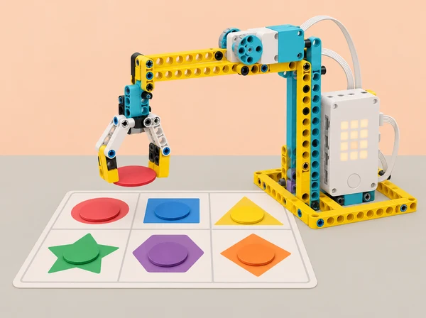

Fira de jocs amb regles clares
🏷️ Python: condicions simples i jocs
🌱 Situació, repte i intenció
Un grup crea una estació interactiva amb SPIKE Prime: la inclinació del hub pot seleccionar una direcció, un mecanisme lleuger pot recollir una fitxa de paper, el sensor de color pot llegir una peça de prova i un marcador de llum o moviment comunica el resultat. Les regles han de ser públiques, provar-se amb casos previstos i inesperats i permetre una partida sense rapidesa física, so obligatori ni informació personal.
Aquesta proposta adapta la unitat 5 Playing Games with Simple Conditions de LEGO Education Introduction to Python Programming · Course 1: Controlling Motion with Tilt, Claw Machine, Charting Game Decisions, Guess Which Color, Guessing Game, Score!, Game Time i Ideas to Help with Game Time. Progressa des de l’entrada d’inclinació i la condició simple cap a un mecanisme amb bucle, diagrama de decisions, sensor de color, condicions if/elif/else i depuració, puntuació amb matriu/moviment, disseny de joc i revisió entre equips.
Totes les regles, taulers i exemples d’aquesta fitxa són propis.
🎯 Aprenentatges i vocabulari
- Explicar que una condició Python avalua una expressió i decideix si executa una branca.
- Llegir valors d’inclinació o orientació del sensor de moviment del hub en la forma que expose l’API local; mapar-los a accions limitades i reversibles.
- Relacionar un bucle de joc amb la ronda d’una partida i definir explícitament quan comença, continua i acaba.
- Descompondre les regles en un diagrama de flux abans d’implementar-les, incloent resposta per entrada desconeguda i cas de partida acabada.
- Programar una decisió basada en color amb valors mesurats en la llum real de l’aula; distingir el color llegit de la interpretació o regla que l’equip li assigna.
- Usar
if,elif,elsei comparacions per seleccionar una resposta; depurar sintaxi, indentació, branca inaccessible o condició invertida. - Gestionar puntuació amb una variable i un senyal de matriu o moviment senzill, comprovant que la puntuació s’actualitza una vegada per esdeveniment.
- Provar el joc amb diferents persones, demanar consentiment, oferir modes d’accés alternatius i aplicar feedback específic.
Condició: expressió booleana que és vertadera o falsa. Branca: camí que s’executa segons la condició. Sensor de moviment del hub: component integrat que informa orientació/inclinació dins dels límits de la seua API. Estat: situació actual del joc (espera, ronda, puntuació, acabat). Puntuació: comptador acordat pel disseny, no mesura de valor personal. Cas límit: entrada que posa a prova una frontera o situació no ordinària.
# Python general: tres respostes explícites per a una entrada ja triada
if direccio == "nord":
resposta = "avança una casella"
elif direccio == "sud":
resposta = "torna a la zona inicial"
else:
resposta = "espera i demana una nova selecció"Aquest exemple usa dades fictícies i no llig inclinació ni controla el robot. Els noms i mètodes de lectura de sensor, motors, llums, matriu i bucle asíncron varien segons la versió de l’app SPIKE. Adapteu el codi a la documentació local i comenceu les proves amb motors aturats.
🧰 Materials i preparació
Un set SPIKE Prime 45678 per equip, hub carregat, sensor de color, motor mitjà, peces per a una urpa o porta lleugera amb recorregut limitat, tauleta/ordinador amb SPIKE Python, fitxes grans mates amb colors i formes coincidents, cartó, cinta, paper, marcador i diari de programació. El sensor de moviment està integrat al hub. Cap material exigeix el set d’expansió.
Si el model d’urpa resulta difícil, substituïu-lo per un indicador articulat o joc en pantalla/tauler: l’objectiu curricular és la decisió programada, no la destresa mecànica.
Proveu prèviament els colors i eviteu fons brillants o llum directa. Definiu una urpa que només s’acoste a fitxes planes de cartó, amb topalls, baixa potència i ample suficient perquè no puga atrapar dits. Trieu un tauler que puga jugar-se assegut; creeu regles impreses amb icona, paraula i color. Prepareu tres variants de joc: selecció per inclinació, selecció manual en targeta i simulació de lectures. Acordeu que les puntuacions són del joc/equip, no de l’alumnat.
Rols rotatius de programació, lectura de regles, prova, accessibilitat/observació i cura del model. El joc es prova en una taula tancada i estable; cap robot es mou cap a una persona ni es deixa executar sense supervisió.
📅 Seqüència didàctica
Inclina i tria una acció (45 min)
Fase 1 · Activem i prediem
Amb una targeta gran de brúixola, definiu com una inclinació podria representar «dreta», «esquerra» o «espera». Predigueu quina acció correspon a cada orientació i oferiu una opció manual equivalent.
Fase 2 · Explorem i construïm
Consulteu el sensor de moviment del hub i anoteu com canvien les lectures en quatre orientacions segures, sense sacsejar ni deixar caure el hub.
Fase 3 · Expliquem i registrem
Escriviu pseudocodi per a una sola regla i registreu lectura, orientació i resposta esperada. Identifiqueu quin llindar utilitzareu.
Fase 4 · Apliquem i millorem
Programeu una indicació lluminosa o una rotació curta, amb motors alçats/apagats de manera segura. Si les lectures menudes alternen les ordres, afegiu una zona neutra i repetiu la prova.
Fase 5 · Comprovem i reflexionem
Urpa de taula amb regles de captura (45 min)
Fase 1 · Activem i prediem
Definiu una ronda: el jugador selecciona una de tres zones i el mecanisme intenta agafar una fitxa gran. Acordeu qui inicia, quants intents hi ha i què significa «capturar».
Fase 2 · Explorem i construïm
Dissenyeu una palanca o urpa de cartó o peces Technic amb límit de recorregut. Poseu la fitxa dins d’una safata plana i comproveu que no hi ha risc d’atrapar dits.
Fase 3 · Expliquem i registrem
Creeu un bucle finit d’intents, una acció d’obrir/tancar i una condició per al resultat triat manualment. Identifiqueu l’entrada, l’acció i el resultat que una persona ha de confirmar.
Fase 4 · Apliquem i millorem
Executeu primer sense peça i després amb una fitxa lleugera. Atureu els motors abans d’ajustar el mecanisme; no afirmeu que detecta una captura si no hi ha sensor verificat.
Fase 5 · Comprovem i reflexionem
Dibuixar totes les decisions abans de jugar (45–90 min)
Fase 1 · Activem i prediem
Proposeu un minijoc de fira que use una elecció i fins a tres resultats. Predigueu quines entrades i respostes necessita per ser comprensible.
Fase 2 · Explorem i construïm
Creeu un diagrama amb estat inicial, entrada, condicions en ordre, eixida de cada cas, puntuació i finalització. Afegiu resposta per a entrada desconeguda i cancel·lació.
Fase 3 · Expliquem i registrem
Una altra parella segueix el diagrama amb targetes. Marqueu si sempre arriba a una resposta, si hi ha una branca inassolible i quina eixida correspon a cada cas.
Fase 4 · Apliquem i millorem
Implementeu branques amb valors fixos abans d’afegir sensors. Compareu l’ordre de les condicions i les igualtats amb el diagrama; proveu totes les entrades previstes i una absent.
Fase 5 · Comprovem i reflexionem
Una fitxa, un color, una resposta (45 min)
Fase 1 · Activem i prediem
Mostreu fitxes planes i predigueu quines distingirà el sensor. Acordeu que cada resposta tindrà també una forma o símbol, no només un color.
Fase 2 · Explorem i construïm
Col·loqueu les fitxes sota el sensor a una distància constant i registreu la lectura de cada color. Feu tres lectures per peça i, si és possible, repetiu amb una altra llum.
Fase 3 · Expliquem i registrem
Assigneu a cada color reconegut un moviment o missatge i creeu una eixida neutral per a «cap/altre». Anoteu lectura, branca i resposta esperada.
Fase 4 · Apliquem i millorem
Implementeu la condició Python. Executeu primer amb motors quiets; després, si és segur, activeu una resposta visual o una rotació curta. Reviseu les categories que es confonen.
Fase 5 · Comprovem i reflexionem
Endevina la regla i depura el programa (45 min)
Fase 1 · Activem i prediem
Trieu una targeta secreta que complisca una propietat pública, com «color primari» o «forma amb tres costats». Predigueu quines respostes donarà el joc sense emmagatzemar dades personals.
Fase 2 · Explorem i construïm
Escriviu una seqüència if/elif/else i un bucle finit de torns. Dibuixeu casos per a cada branca i exemples que no hi pertanyen.
Fase 3 · Expliquem i registrem
Analitzeu tres programes amb errors: sintaxi/indentació, condició invertida i else prematur. Predigueu el resultat de cadascun abans de corregir-lo.
Fase 4 · Apliquem i millorem
Canvieu una línia cada vegada i proveu-la amb els casos de la taula. Implementeu la vostra versió en Python general o amb el hub quiet i comproveu el màxim de torns.
Fase 5 · Comprovem i reflexionem
Marcador visible i puntuació justa (45 min)
Fase 1 · Activem i prediem
Creeu una regla senzilla, com un punt per encert fins a un màxim de tres. Predigueu com es mostrarà una puntuació sense comparar capacitats personals.
Fase 2 · Explorem i construïm
Afegiu una variable punts i representeu-la amb la matriu del hub o un indicador de moviment. Actualitzeu-la una vegada després d’un esdeveniment vàlid.
Fase 3 · Expliquem i registrem
Prepareu casos d’encert, error, torn repetit, partida acabada, puntuació màxima i reinici. Compareu el valor de la variable amb la llum o moviment observat.
Fase 4 · Apliquem i millorem
Comproveu si una entrada sostinguda o acció repetida suma punts més d’una vegada. Proveu per separat l’increment i el reinici i corregiu qualsevol discrepància.
Fase 5 · Comprovem i reflexionem
Construir un joc complet per a la fira (90 min)
Fase 1 · Activem i prediem
Definiu objectiu, regles en tres passos, nombre de rondes, respostes, marcador i alternatives d’accés. El joc usarà condicions Python i un component SPIKE; el sensor és opcional si ja s’ha calibrat.
Fase 2 · Explorem i construïm
Feu un diagrama d’estats i matriu de casos per a inici, resultats, entrada ambigua/no reconeguda, màxim de punts, nova ronda i cancel·lació/reinici. Munteu un suport estable i delimiteu la peça mòbil i la zona de mans.
Fase 3 · Expliquem i registrem
Implementeu en parts l’entrada, la condició, la resposta, la puntuació i el final. Documenteu qualsevol exemple de codi reutilitzat i vinculeu cada regla amb un cas del diagrama.
Fase 4 · Apliquem i millorem
Executeu tots els casos i verifiqueu que cada ronda acaba i el reinici neteja la puntuació. Prepareu instruccions clares, mode sense so/color i una resposta per a lectura invàlida.
Fase 5 · Comprovem i reflexionem
Feedback i millora de la fira (30–45 min)
Fase 1 · Activem i prediem
Un altre equip llig les instruccions i prova el minijoc. Els autors observen la primera ronda sense donar pistes; no recolliu noms ni puntuacions individuals.
Fase 2 · Explorem i construïm
El revisor anota una cosa que ha entés, una regla confusa i un cas límit que afegiria. L’equip autor tria un suggeriment relacionat amb l’objectiu.
Fase 3 · Expliquem i registrem
Registreu quin suggeriment s’ha triat i quina regla, entrada o missatge afectarà. Predigueu quin resultat hauria de canviar i quin cas hauria de continuar funcionant.
Fase 4 · Apliquem i millorem
Canvieu una condició, missatge, entrada o regla. Executeu de nou el cas que va motivar el canvi i un cas que ja funcionava.
Fase 5 · Comprovem i reflexionem
🧪 Evidències i avaluació
Recolliu regles inicials, captures/dibuixos de lectura de sensor sense dades personals, diagrames de flux, taula de veritat/casos, pseudocodi, versions de if/elif/else, fragments depurats, registre de puntuació, prova de matriu/actuador, instruccions de joc, observació anònima entre parelles i comparació abans/després. Producte: joc de fira d’una estació, jugable tant en mode manual com en mode robot, amb regla, puntuació i instrucció accessibles.
Avalueu quatre dimensions: lògica condicional (preveu i codifica les branques); integració i estat (sensor o entrada, resposta, puntuació i reinici concorden);
♿ Participació, accessibilitat i seguretat
Cada regla combina símbol i paraula amb color; hi ha mode manual i mode sense so, i els torns no depenen de velocitat de reacció. Permeteu llegir, explicar, programar, registrar o construir amb valor equivalent. No useu contrasenyes, cares, noms ni dades personals. Manteniu joc i mecanisme a taula, urpa limitada a fitxes de cartó, velocitat baixa i motors aturats en qualsevol ajust. Sensor i inclinació no són dispositius de seguretat ni garanteixen una detecció. Cap peça s’apropa a cossos; supervisió contínua.
🔗 Referents i adaptació
Adapta la unitat 5 Playing Games with Simple Conditions del curs LEGO Education *Introduction to Python Programming · Course 1*: Controlling Motion with Tilt, Claw Machine, Charting Game Decisions, Guess Which Color, Guessing Game, Score!, Game Time i Ideas to Help with Game Time. Es conserva la pràctica de sensor de moviment, bucle d’interacció, representació de decisions, sensor de color amb condicions, if/elif/else i depuració, moviment/matriu com a resposta de joc, projecte integrat amb seqüència d’esdeveniments i revisió per companys.
El joc de fira, el tauler, les regles i l’avaluació són propis; la instrucció de maquinari i els noms d’API s’han de validar en l’app disponible. Les durades oficials indexades indiquen jocs de 45 minuts, projecte de 90 minuts i revisió de 30–45 minuts; la planificació ací permet dividir el projecte en més d’una sessió.